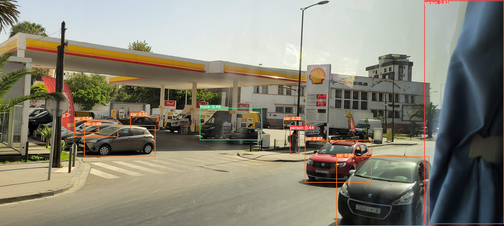
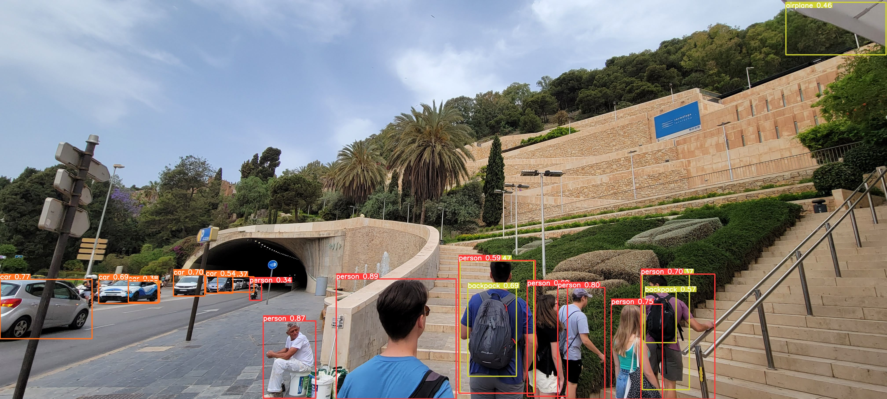
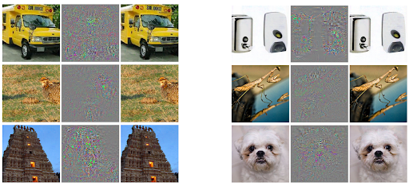
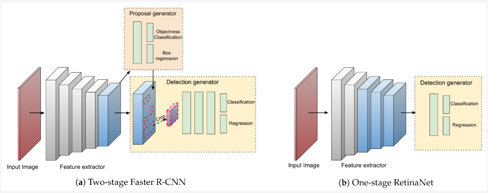
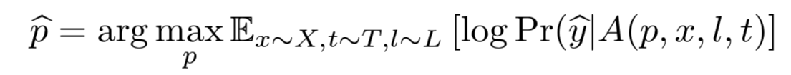
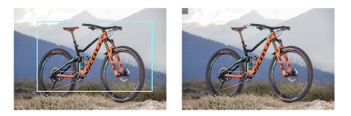
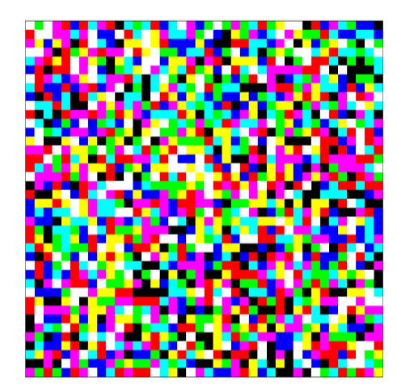
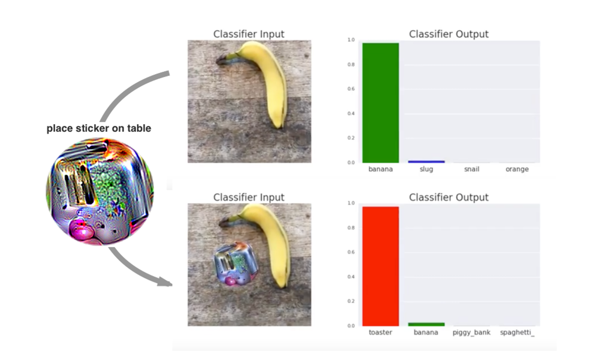

Adversarial Patch Attacks for the Camouflaging of Pedestrians and Cars From Computer Vision Models in Autonomous Driving
Kevin Lizarazu-Ampuero Jhonny Velasquez Fall 2022 ECE 4554/5554 Computer Vision: Course Project Virginia Tech
Abstract
Modern-day systems are always at the risk of vulnerabilities and exploitation in a world where
adversaries exist to wreck havoc on the systems in place that keep us safe and maintain order in our society.
With most modern systems relying more on automated services such as automated driving and customer service,
keeping humans out of the loop, users and everyone external are at the mercy of these black box algorithms that
have been proven to be affected greatly by small perturbations in the data for evaluation, many of which are dismissable
and imperceptible to humans. This paper will take a deep dive into how adversarial patch attacks are generated
and their effectiveness on first stage detectors such as YOLOv5 for real-time object detection, utilizing pretrained
models on premade datasets such as Waymo, NuScenes, or COCO, with future steps planned to apply and analyze the impact
of our patch on more robust object detection frameworks such as Faster R-CNN. Proceeding through our established pipeline
it was apparent that the simple white-box attack was decrementing confidence levels and YOLO's ability to classify
objects correctly.
Teaser figure


Figure 1 and 2: Respectively left and right, these two images are the result of
a normal detection sample using YOLOv5s weights trained on the first 128 images of COCO [16']
Figure 3 and 4: Images are now evaluated with a trained adversarial patch
embedded in each image, causing it to miss classifications that were present in Figures 1 and 2.
Introduction
Automation plays a big role in our day-to-day lives, whether it be to simplify repetitive tasks or run through large and complex
strings of data for inferencing and processing. Over the years, we as a society have become more reliant on these systems to take
over mundane tasks that result in the displacement of millions of workers and even the need of retraining workforces that are at risk
of the apparent Fourth Industrial Revolution just to keep up with new advances and research [1']. Of course the promise will always
be that more jobs will be created as a result of these advances, but the underlying truth stands that AI and robtics will end up replacing
a significant chunk of existing human jobs, which at the heart of business means slashing costs, enhancing productivity, and keeping humans
out of the loop when carrying out these new projects. Among one of the existing human jobs at stake of getting replaced are automated vehicles,
which provide reduced accidents, reduced traffic congestion, reduced fuel consumption and emissions, transportation accessibility, and much more
compared to human drivers [2']. This being said, while autonmous vehicles provide greater benefits to society in general, the biggest obstacle
for integrating into society won't be acceptance, it will be high costs that come with owning a vehicle that contains the latest sensors, radars,
amd communication devices that are more costly when compared to the less safe features of older vehicles [3']. To achieve desirable levels of
automation that is both accurate and inexpensive is difficult to achieve with the circumstances of adverse weathter, lighting conditions, accluded objects,
and even adversaries that make it their mission to break these systems. For this reason many modern vehicles that are capable of driving autonomously
carry a combination of both an RGB camera and LiDAR as part of their sensor suite. Since LiDAR is many times more expensive than a camera, which is inexpensive,
requires less memory storage, and faster to process than LiDAR 3D points [4']. The pursuit here is to determine how easily fooled these one-stage or two-stage object
detection systems can be fooled when the convolutional neural network (CNN) is put up against an adversarial patch [5'].
Current methods to induce confusion
have been in the methods of targeted and untargeted attacks. Targeted attacks take in a target class that we want the model to classify the patch as, given the
model and its CNN used for training the object detector we are then able to perform an iterated gradient descent on the input image that requires modification
of the input image. An untargeted attack works similarly except the goal is to have the detector not identify any object in the image correctly. Our approach
to achieving this level of success is by training on a past version of the single detector YOLO with MMDetection [6'][7'], given that historically these detectors
are known to be fast and not as accurate as two-stage detectors, increasing our chances of fooling an object detector. Once our proof of concept works
as expected development will take place to misclassify cars and pedestrians for both image and video applications when embedding our adversarial patch,
showing how dangerous these methods are for vehicles solely relying on computer vision methods to navigate and avoid obstacles. If these results are
easily achievable, there is a great security threat as attackers are then able to disperse these patches and cause damage. Our plan to analyze whether our patches
are confusing the object detection model is by comparing the results between the modified and unmodified images, recording classes and confidence percentages.
Problem Statement
Object detection systems have seen widespread use in recent years with the rapid development of computational
resources, especially in GPU computing power, and improved machine learning algorithms, allowing for even the most
complex detectors to be able to deploy on edge systems, in environments and settings which would not have been possible
only a decade ago. Object detection systems today are used for various applications such as autonomous vehicle navigation,
security systems, and applications that require an object's tracking. More use cases and applications that can use object
detectors are constantly being found and developed. However, as we become more dependent on object detectors to perform
critical tasks, such as identifying security threats and safely navigating autonomous vehicles, the issue of robustness
in a world where adversaries exist is one that must be addressed.
There are two main types of adversarial attacks that we identify. The first is an attack aimed directly at the physical device
performing the detection, which prevents the device from actually performing object detection. The second is an attack aimed
at the classification that the detector performs, and attempts to mislead the detector as to what it is actually detecting.
For this project, we will focus on the latter. Specifically, we will attempt to first successfully create an object detection
system that identifies pedestrians and vehicles. The framework used to train this object detection system will then be used to
create an adversarial patch attack that will successfully interfere with the classification of objects within an image given
that there is knowledge about the dataset it was trained on as well. With this project we aim to exploit vulnerabilities by
going to the lengths that adversarial partners would take to mess with automated systems that keep the public safe and in-check.
Approach
A. Object Detection System
The first part of this project will be to develop an object detection/classifier system that can successfully detect, with
a reasonable degree of accuracy, pedestrians and vehicles, similar to what an object detection system on an autonomous vehicle
could expect to see. We will take advantage of the unique property of convolutional neural networks in how they disentangle
an image's variation factors within a space of possible activations to gather semantic information of what's contained in the
captured region [8']. Having such a unique pattern-recognizing algorithm for the purpose of generalizing objects in object
recognizing tasks has us expect that there are levels of robustness to small perturbations when the object is being categorized,
when in reality it has been found that applying imperceptible non-random perturbations, from optimizing the inputs to maximize
prediction error, affects the network's prediction of objects. As seen by Figure 2, when an image has been applied with imperceptible
perturbations it is imperceptible to us, but negatively affects the system predicting it, as seen by the difference between the two
where there are points of interest that shift the model's understanding of what's in the image.

Figure 2: On all of these images the left-most image is the original image, on the right-most image are images that have
been predicted incorrectly as an ostrich, Struthio camelus, and the center image is a result of the difference between original and incorrectly-classified image. [8']
To create our object detection models we must first consider the various one-stage pipelines, YOLOv3 or SSD, and two-stage frameworks,
Faster R-CNN or Mask RCNN, at our disposal [9'].
Two-stage detectors are known to use a region proposal network (RPN) to identify bounding boxes
in stage one, and then classify the contents within the bounding boxes for stage two if the objectness score is high enough in stage one.
This framework outputs k bounding box proposals that each contain 2 scores that dictate the probability of an object either being present or
not present in that corresponding bounding box [4'].
One of the main reasons to use the RPN is find the predefined number of regions, as a selective search, in order to reduce
the computational requirements of the overall inference process. Anchors are then placed uniformly throughout the image that determines if the area
has relevant information or if they need to be adjusted to better fit the relevant obects. Region of Interest (RoI) pooling is applied to the features
extracted by the CNN and their respective bounding box to extract features that correspond to our relevant objects. As a final touch, bounding boxes are
adjusted and labeled with a classifier, which given our threshold dictate which boxes are shown in the output.
This is different than one-stage pipelines in which prediction is taken at the same time that the object proposal is being generated. Major differences between
the two frameworks is that two-stage detectors essentially prioritize detection accuracy, while one-stage frameworks prioritize inference speeds.
A popular example of this one-stage pipeline is the YOLO framework, which utilizes anchors that divides images into regions that simulateneously solve
the regression problem for bounding box offsets, confidence scores, and class probabilities.
Additional deep learning feature extractors that work for both kinds of detectors exist that make the process faster such as ResNet, DarkNet, and MobileNet [4'].
For this project, the one-stage and two-stage detectors of choice are YOLO and Faster R-CNN when comparing adversarial attack results.

Figure 3: Architecture for object detection deep learning meta-architecture [5'].
The detector will be developed using a machine learning API in Python, most likely either Tensorflow or PyTorch. To develop object detection at this stage,
data will be a critical factor that will determine the success of the machine learning model. We expect that the data collected from the Waymo Perception
dataset and NuScenes datasets will be enough to develop a robust object detection system in the context of an autonomous vehicle encountering pedestrians
and cars while traversing roads [10'][11']. However, we are also considering the generation of synthetic data using Unity, in the form of simulated vehicle and
pedestrian images, for the machine learning model to also train on. This will be a separate sub-goal of this project, specifically evaluating effects on
performance on image-based object detectors with the use of synthetic data to provide methods of testing adversarial patch effectiveness when training
other machine learning models in a cost and time-effective manner.
B. Adversarial Patch Attack
Adversarial digital attacks can occur in both the black and white box settings. In the black box attack, the patch is crafted on a surrogate model
and then tested on a victim model with different parameters to make patch effective for our expectations [9']. This differs from the white box
attack in which the attacker has knowledge on the weights of the object detection model that is then used to train a patch. In real world situations
the attacker is imploring a black box attack, weights are unknown, and be transferable from the digital world into the physical world, with the
ultimate goal of generalizing digital-attacks to the real-world. In our project the plan is to work with white-box attacks so that we can increase
our opportunity in creating an effective adversarial patch. In addition, having similar deep learning architectures for the purpose of object detection
creates for a common methodology among these frameworks which can be summed up to: obtaining a convoutional backbone to serve as the feature
extractor paired with a sliding window style prediction which then uses a mixed regression and classification objective to achieve the goal of detecting
objects [4']. Knowing how the deep learning architecture works is at the heart of how patches are created, exploiting the unified comparison among
different detection systems and configurations.
Our approach to train an adversarial patch is to obtain bounding box information from a dataset of our choosing, preferably in the COCO format [18'], which are then used to place a
randomly transformed patch at the center of each detected person's bounding box that were sampled by the our trained object detector, updating the pixels in the patch to minimize the objectness
score in the output feature map. Additional transformations and augmentations are implemented in the training of this patch by a randomized vector
and in compositions of varying levels of brightness, contrast, rotation, translation, and shearing effects to aid in the robustness of the patch
when applied to the real world [9']. The formula followed to achieve a trained patch is to use the variant of the Expectation over Transformation framework,
in which once the EOT has been parameterized and distribution T chosen, the training will then be to optimize the objective function where X are the training images [5'][19'].

Figure 4: Obtaining trained patch p using the variant of EOT [5'].
Two outcomes occur when inserting an adversarial patch that are either in the form of targeted, patch that aims to make the occupied bounding box region to
recognize the space as the only Region of Interest (RoI) by the framework and invalidate their output no matter the placement of the patch, or
untargeted attacks, a patch that also despite its location aims to disable the detector and misclassify the object as seen in Figure 5 [12'].

Figure 5: After applying the patch on the upper-left of the right image the object detection system, YOLO,
fails to detect and classify as the bounding box is small and contains invalid tags.
Creating these adversarial patches will require the use of the Adversarial Robustness Toolbox (ART) to create DPatch and Robust DPatch attacks [13'].
Following their code structure API and theory from pseudocode, the following is desired in Figure 6. An example of the effects of these patches on object detection
is shown in Figure 7.

Figure 6: Adversarial Patch []

Figure 7: Example of white box generated adversarial patch in the real world classifying banana as a toaster [5']
Experiments and results
As mentioned in the previous section, the machine learning model will be developed using a machine learning framework, most likely either
Tensorflow or PyTorch due to the vast amount of available documentation and communities that use the software. The availability of annotated data
will be a critical factor in determining the performance of the object detector. Currently, the nuScenes [10'] and Waymo Perception datasets [11'] are
being considered for use, particularly for their abundance and specificity in the type of data that we intend to detect. We expect that this will
be enough data to successfully train a robust machine learning model. The exact neural network architecture that will be used is currently unknown,
however, a combination of convolutional layers and multi-layer perceptrons is expected, as it is a common theme in many successful image recognition models.
As mentioned previously, a sub-goal of this project is to evaluate if any significant performance improvements (>2% accuracy improvement) in object
detection can be obtained by generating synthetic images, which is a technique commonly used when data is sparse. However, since data sparsity is not an
issue, this project will also explore if a combination of both real-world and synthetic data can lead to performance improvements and robustness.
The synthetic data will be generated using Unity's Perception Package (Unity Computer Vision) [14'] which provides a framework for the generation of
synthetic images while also allowing for variations in image parameters to provide a robust dataset.
Results
Performance metrics for the object detection machine learning model will be based primarily on the accuracy and loss values that are
determined by the chosen machine learning framework (i.e. Tensorflow, PyTorch, etc.). These results will, as of now, be based off of a
80/15/5 split, for the training, validation, and test data sets respectively. As mentioned in the previous sections, the use of synthetic
data will be also explored as a potential way to improve the performance of the object detector. This will be done by comparing accuracy metrics
with and without the use of synthetic data during training. Since it is currently unknown how much, if any, improvements can be made with the use
of synthetic data, a consistent 2% improvement in accuracy with the use of synthetic data will be considered a success. To visualize this, accuracy/loss
vs epoch plots will be created.
Overall, a successful project will include developing an object detection machine learning model that can detect vehicles and pedestrians
with over 90% accuracy on average, and developing adversarial patch attacks that decrements the accuracy percentage to under the stated threshold,
misclassify objects in the image, or completely disable the object detection model created.
Conclusion
This report has described .... Briefly summarize what you have done.
References
[1'] J. Kelly, “U.S. lost over 60 million jobs-now robots, Tech and artificial intelligence will take millions more,” Forbes, 12-Oct-2022. [Online]. Available: https://www.forbes.com/sites/jackkelly/2020/10/27/us-lost-over-60-million-jobs-now-robots-tech-and-artificial-intelligence-will-take-millions-more/?sh=7fb07e9d1a52. [Accessed: 28-Nov-2022].
[3'] “The cost of self-driving cars will be the biggest barrier to their adoption,” Harvard Business Review, 31-Jan-2019. [Online]. Available: https://hbr.org/2019/01/the-cost-of-self-driving-cars-will-be-the-biggest-barrier-to-their-adoption. [Accessed: 28-Nov-2022].
[4'] M. Carranza-García, J. Torres-Mateo, P. Lara-Benítez, and J. García-Gutiérrez, “On the Performance of One-Stage and Two-Stage Object Detectors in Autonomous
Vehicles Using Camera Data,” Remote Sensing, vol. 13, no. 1, p. 89, Dec. 2020, doi: 10.3390/rs13010089.
[5'] T. B. Brown, D. Mané, A. Roy, M. Abadi, and J. Gilmer, “Adversarial patch,” arXiv.org, 17-May-2018. [Online]. Available: https://arxiv.org/abs/1712.09665. [Accessed: 28-Nov-2022].
[6'] J. Redmon and A. Farhadi, “Yolov3: An incremental improvement,” arXiv.org, 08-Apr-2018. [Online]. Available: https://arxiv.org/abs/1804.02767. [Accessed: 28-Nov-2022].
[7'] “Papers with code - mmdetection,” MMDetection | Papers With Code. [Online]. Available: https://paperswithcode.com/lib/mmdetection. [Accessed: 28-Nov-2022].
[8'] C. Szegedy, W. Zaremba, I. Sutskever, J. Bruna, D. Erhan, I. Goodfellow, and R. Fergus, “Intriguing properties of neural networks,” arXiv.org, 19-Feb-2014. [Online]. Available: https://arxiv.org/abs/1312.6199. [Accessed: 28-Nov-2022].
[9'] Z. Wu, S.-N. Lim, L. Davis, and T. Goldstein, “Making an invisibility cloak: Real world adversarial attacks on object detectors,” arXiv.org, 22-Jul-2020. [Online]. Available: https://arxiv.org/abs/1910.14667. [Accessed: 28-Nov-2022].
[10'] H. Caesar et al., “nuScenes: A multimodal dataset for autonomous driving,” arXiv preprint arXiv:1903.11027, 2019.
[12'] X. Liu, H. Yang, Z. Liu, L. Song, H. Li, and Y. Chen, “DPatch: An adversarial patch attack on object detectors,” arXiv.org, 23-Apr-2019. [Online]. Available: https://arxiv.org/abs/1806.02299v4. [Accessed: 28-Nov-2022].
[14'] Unity Technologies, Unity Perception Package. https://github.com/Unity-Technologies/com.unity.perception, 2020. [Online]. Available: https://github.com/Unity-Technologies/com.unity.perception
[15'] R. C. Gonzalez and R. E. Woods, Digital Image Processing, 4th ed. New York, NY: Pearson, 2018.
[19'] A. Athalye, L. Engstrom, A. Ilyas, and K. Kwok, “Synthesizing robust adversarial examples,” arXiv.org, 07-Jun-2018. [Online]. Available: https://arxiv.org/abs/1707.07397. [Accessed: 28-Nov-2022].